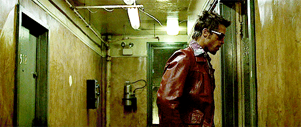

Fight Club
An insomniac office worker, looking for a way to change his life, crosses paths with a devil-may-care soap maker, forming an underground fight club that evolves into something much, much more. (released 1999)
The unnamed Narrator (Edward Norton) is a traveling automobile recall specialist who suffers from insomnia. One night, he visits a support group for testicular cancer victims, where they assume that he, too, is a victim, and he spontaneously weeps into the nurturing arms of another man, finding a "freedom" that relieves his insomnia. He becomes addicted to participating in support groups of various kinds, always allowing the groups to assume that he suffers what they do. However, he begins to notice another impostor, Marla Singer (Helena Bonham Carter), whose presence disturbs his bliss. The two negotiate to avoid their attending the same groups, but, before going their separate ways, Marla gives the Narrator her phone number.
On a flight home from a business trip, the Narrator meets Tyler Durden (Brad Pitt), a soap salesman with whom he begins to converse after noticing the two share the same kind of briefcase. After the flight, the Narrator returns home to find that his apartment has been demolished by an explosion. He calls Tyler and they meet at a bar. A conversation about consumerism leads to the Narrator moving into Tyler's dilapidated mansion. Outside the bar, Tyler requests that the Narrator hit him, which leads the two to engage in a fistfight. They have further fights outside the bar on subsequent nights, and these fights attract growing crowds of men. The fighting eventually moves to the bar's basement where the men form a "fight club," a routine opportunity for the men to fight recreationally.

Marla overdoses on pills and telephones the Narrator for help; he ignores her, but Tyler answers the call and saves her. Tyler and Marla become sexually involved, and Tyler warns the Narrator never to talk to Marla about him. More fight clubs form across the country and, under Tyler's leadership, they become the anti-materialist and anti-corporate organization called "Project Mayhem." The Narrator complains to Tyler that he wants to be more involved in the organization, but then Tyler suddenly disappears. When a member of Project Mayhem is killed by the police during a botched sabotage operation, the Narrator tries to shut down the project, and follows evidence of Tyler's national travels to track him down. In one city, a Project member greets the Narrator as Tyler Durden. The Narrator calls Marla from his hotel room and discovers that Marla also believes him to be Tyler. He suddenly sees Tyler in his room, and Tyler reveals that they are dissociated personalities in the same body. When the Narrator has believed himself to be asleep, Tyler has been controlling his body and travelling to different locations.
The Narrator blacks out after the conversation, and when he awakes, he uncovers Tyler's plans to erase debt by destroying buildings that contain credit card companies' records. The Narrator tries to contact the police, but finds that the officers are members of the Project. He attempts to disarm the explosives in a building, but Tyler subdues him and moves him to the uppermost floor. The Narrator, held at gunpoint by Tyler, realizes that, in sharing the same body with Tyler, he himself is actually holding the gun. He fires it into his mouth, shooting through the cheek without killing himself. Tyler collapses with an exit wound to the back of his head, and the Narrator stops mentally projecting him. Afterward, Project Mayhem members bring a kidnapped Marla to him, believing him to be Tyler, and leave them alone. The explosives detonate, collapsing many buildings around them; the Narrator and Marla, holding hands, look on.